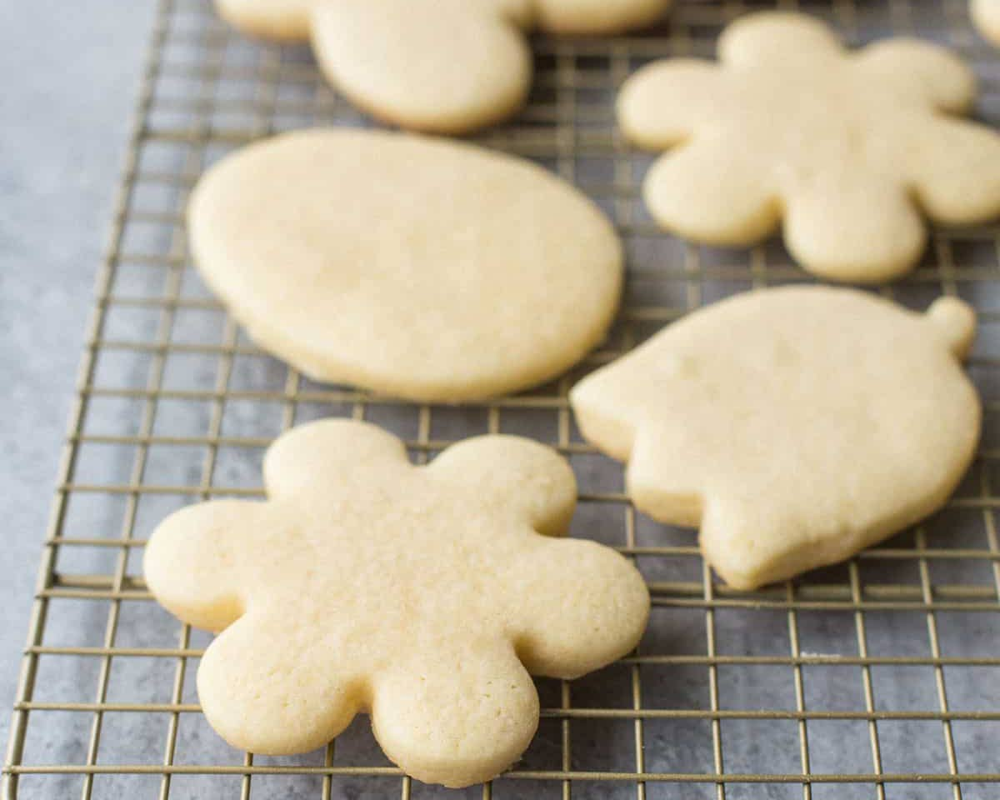

Fluffy Sugar Cookies
These simple sugar cookies make for the perfect holiday treat - soft, fluffy, and not overly sweet. Making a whopping several dozen cookies, this recipe is great for an afternoon activity with family or friends. (Bonus points if you're using dinosaur cookie cutters.)
Yield: about 10 dozen cookies
Prep: 15 minutes | Baking: 10-12 minutes per baking sheet
Contains: wheat, dairy, egg
Equipment
- Stand or Handheld Mixer (even a plain ol' whisk will do fine)
- Large Mixing Bowl
- Rolling Pin
- Cookie Cutters
- Baking Sheet
- Cooling Rack (if you're feeling fancy)
Ingredients
- 1 cup Milk
- ½ tsp. Baking Soda
- 1½ cups Granulated Sugar
- 3 Eggs
- 2 tbsp. Vanilla Extract
- ½ tsp. Salt
- 1 cup Melted Shortening (or Unsalted Butter)
- 4¾ cups Al-Purpose Flour
- 1 large tbsp. Baking Powder
Instructions
Before you start: preheat oven to 375°F
Mixing the dough
- In mixing bowl, beat baking soda in milk.
- Add sugar, eggs, vanilla, shortening/butter, and salt. Beat well until evenly combined.
- Slowly mix in flour and baking powder until fully incorportated.
Note: The dough will be very sticky! This is ok! Don't panic! We can add more flour when kneading the dough. Speaking of...

Rolling and Cutting out Cookies
- Separate dough into at least two parts (working with less dough is easier). Place dough on a flour coated surface. Sprinkle some flour on top and knead until extra flour is fully incorporated. Add more flour as necessary until dough doesn't stick to your hands.
- Roll out dough to about ¼ inch thick.
- Cut out cookies with cookie cutters (or free hand some shapes) and place on baking sheet.
Note: Baking sheet can either be unlined or lined with parchment paper. These cookies will not to stick to the pan, so it's all about personal preference.

Baking and Serving
- Bake at 375° for about 6-7 minutes, or until lightly browned underneath.
- Let cool compeltely before serving or frosting (if you're into that sort of thing). Or you can burn your mouth on some delicious cookies and devour them immediately.
Note: Store leftover cookies in an airtight container at room temperature up to 3 weeks. Cookie dough will keep in the refrigerator for 2-3 days, or up to 3 months in the freezer. If freezing, allow dough to soften before rolling out.